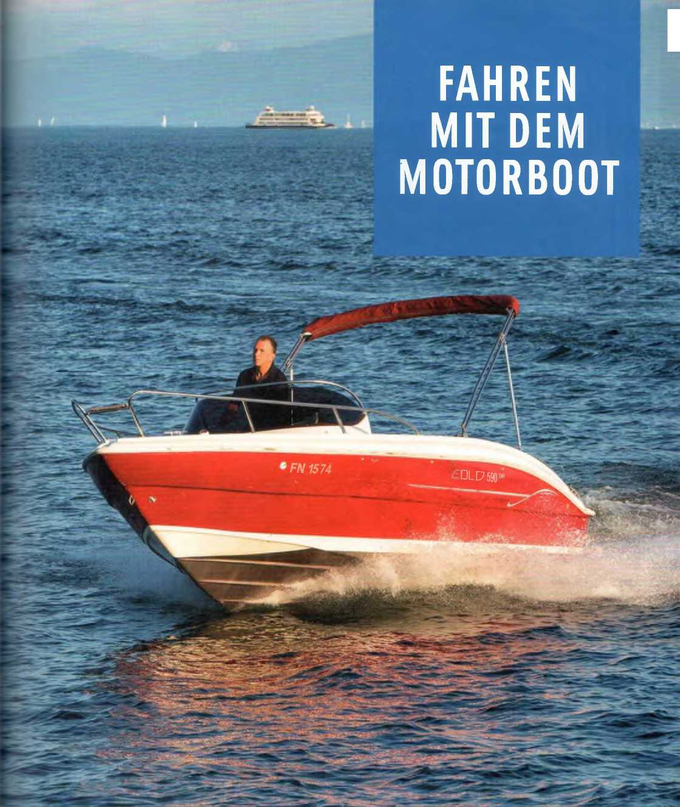
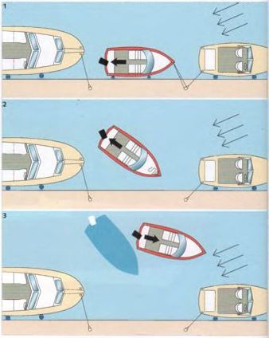
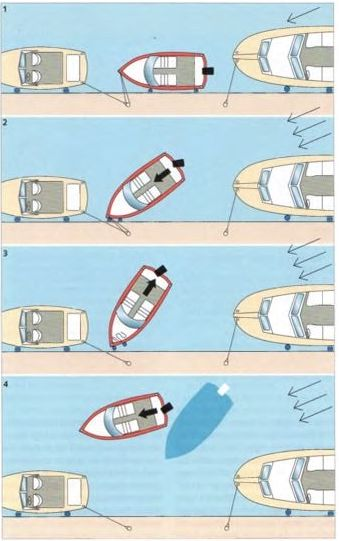
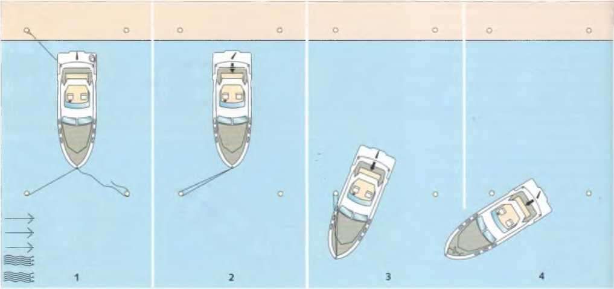

Отход от причала совершенно прост, если нет ветра и течения и спереди и сзади достаточно места для маневрирования. Сначала дать двигателю немного прогреться, затем отдать швартовы, включить передачу и вывести лодку от причала или из стояночного бокса вперёд или назад в зависимости от ситуации. Однако такие идеальные условия встречаются редко. Чем выше надстройки, тем сильнее воздействие ветра на лодку и тем сложнее манёвр отхода. Похожие трудности создаёт и течение.
Показанные здесь манёвры выполняются с поворотными винтами (подвесной двигатель или Z‑привод). У таких приводов влияние бокового эффекта винта в значительной степени компенсируется трим‑пластиной, поэтому направление вращения винта играет меньшую роль. При какой частоте оборотов двигатель лучше всего выполняет манёвры, необходимо определить заранее на практике. Поворотные приводы требуют определённой чувствительности управления.

Отход от причала — ветер под углом к причалу с носа
При отжимном ветре (с берега) манёвр значительно проще. Нос или корма — в зависимости от направления ветра — отталкиваются от причала багром или ногами. Отталкиваться руками опасно, так как центр тяжести оказывается за бортом. Когда нос или корма отклонятся от причала примерно на 15–20°, выровнять привод и на малом ходу вперёд или назад увести лодку от причала.
Если резко повернуть привод, нос или корма могут удариться о причал.

Отход от причала — ветер под углом к причалу с кормы
Лодки с неподвижным гребным валом и рулем реагируют несколько иначе, но могут эффективно использовать эффект «движения винта» для своих маневров. У них есть четкая «хорошая сторона». Это левая сторона для правосторонних винтов.

Выход из марины — ветер или течение сбоку
Противодействуйте ветру или течению, воздействующему на корму. Двигайтесь медленно. Держите носовой швартов натянутым и ослабляйте его только настолько, насколько это необходимо для продвижения лодки вперед. Не допускайте сдвига носа на подветренную сторону.
Причалы для лодок встречаются редко. Понятно, что все операторы портов стремятся разместить как можно больше лодок. Это все чаще приводит к установке так называемых доковых боксов, каждый из которых имеет две сваи для швартовки носа и кормы. Часто канал между рядами свай довольно узкий, оставляя мало места для маневрирования. Поэтому вход и выход из бокса для менее опытного водителя может быть временами довольно нервирующим. Это особенно актуально для лодок с жестким гребным валом, где необходимо учитывать эффект «провисания» винта, а также при боковом ветре. Боковой ветер имеет неприятную тенденцию прижимать лодку к сваям и вызывать ее крен. В этом случае безопасный маневр можно выполнить только с помощью швартовных тросов.

При отходе от буя лодку с выключенной передачей — носовой конец на скользящем креплении — отпускают настолько назад, чтобы убедиться, что она свободна от крепления буя. Только после этого отдать конец, включить передачу и выйти на курс.
Что тренерует Вебер: отход от причала на большой лodке со встроенным левосторонним винтом. Швартовые концы отпущены. Штурвал на право. Самый малый вперед. Лodка отходит кормой от причала и спереди упирается на кранец. Перевести в нейтральное положение. Оглянуться назад. Перевести руль ближе к среднему положению. Передача - реверс. Малым ходом отойти назад. Корма в итоге завернет направо.
Требуемые комманды:|
Команда |
Маневр |
| Klar zum Ablegen; | ------- |
| alle Linien los ausser Vorspring; | Штурвал полностью вправо, малый ход вперед. Лodка отходит кормой от причала и спереди упирается на кранец. Перевести в нейтральное положение. Оглянуться назад. |
| Vorspring los; | Перевести руль ближе к среднему положению. Передача - реверс. Малым ходом отойти назад. |